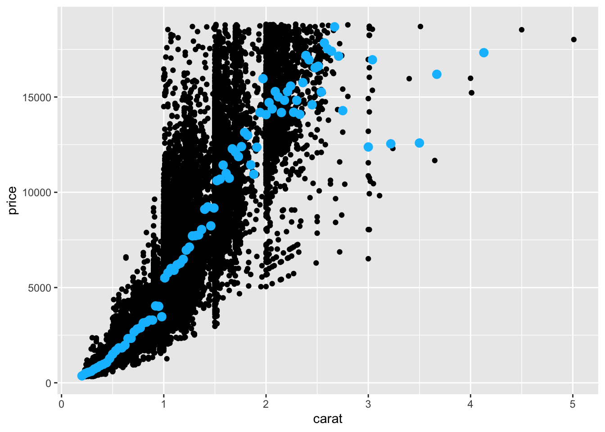
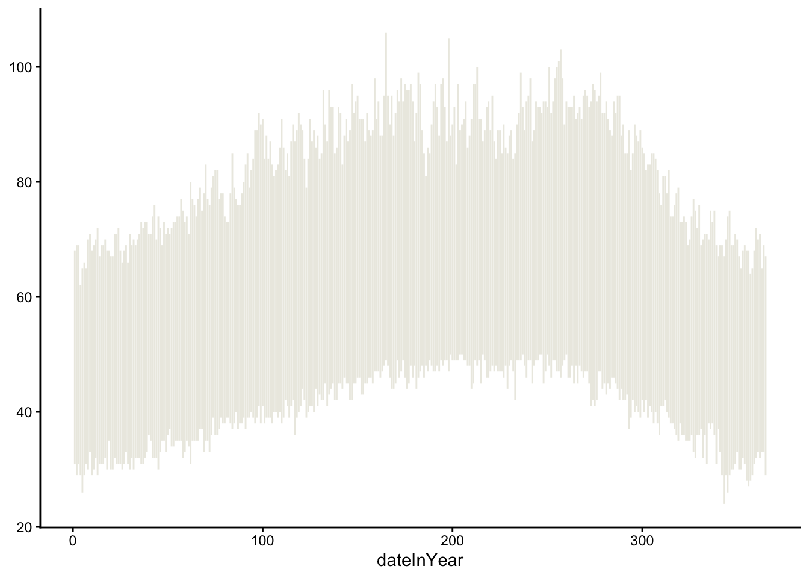
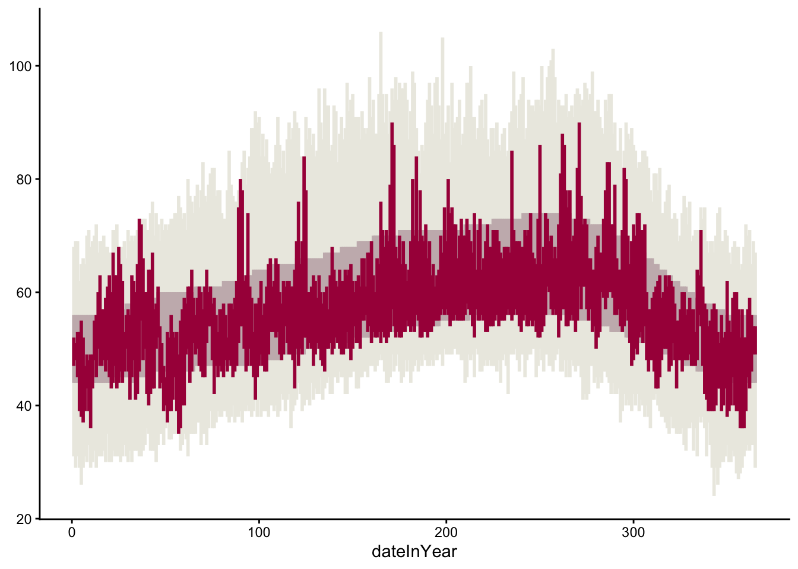
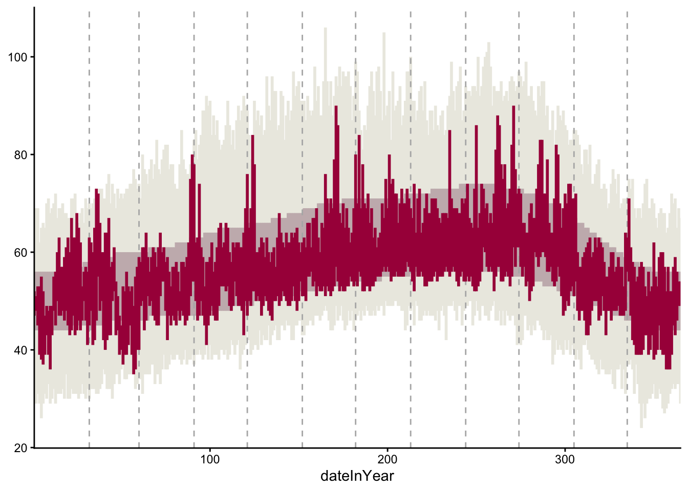
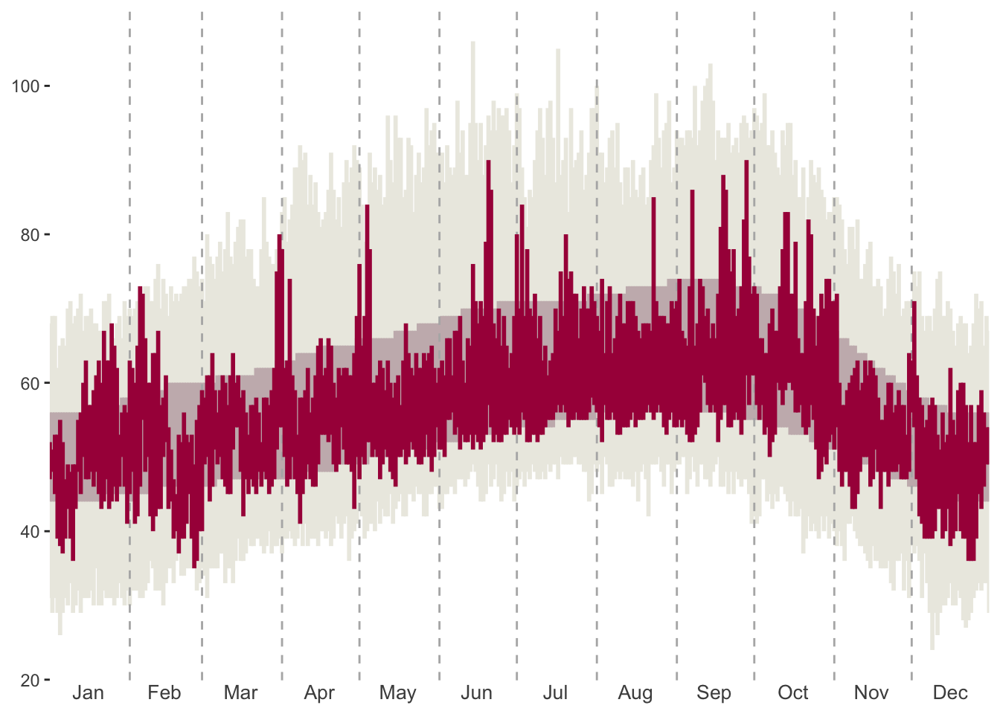
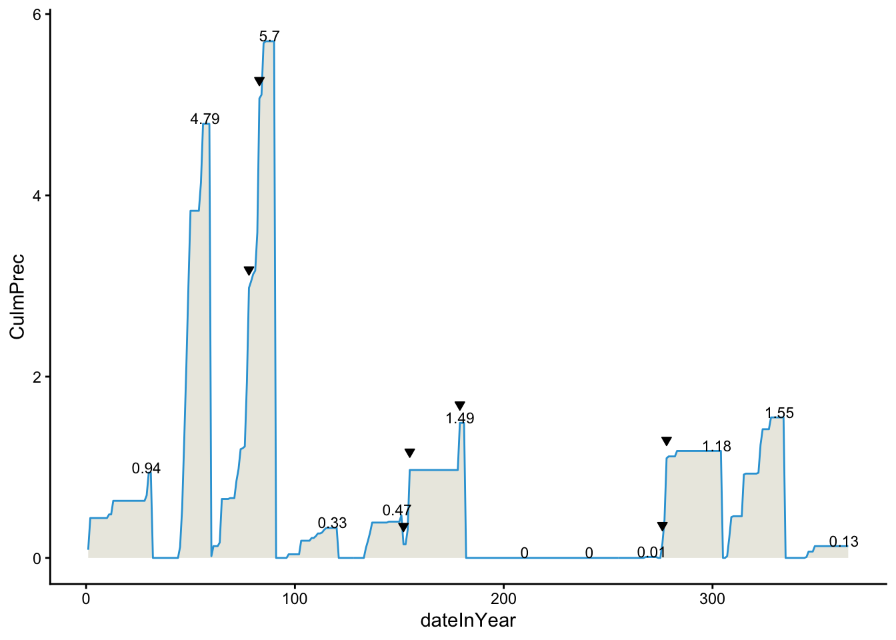

3 Adv Data Viz
🧩 Learning Goals
By the end of this lesson, you should be able to:
- Navigate
ggplot2reference page to find needed functions for a desired visualization - Navigate the different sections of a function help page to construct desired plot features, in particular,
- Navigate the Usage section to identify arguments that must be set
- Navigate the Arguments section to understand how arguments work
- Navigate the Aesthetics section to learn how plot appearance can be controlled
- Navigate the Examples section for some usage examples
- Identify when to use different
dataarguments withinggplot()andgeom_()layers
Introduction 1
In this lesson, we are going to recreate NYTimes 2015 Temperature Visualization (html) using data from San Francisco (SFO) in 2011.

Reading Data
Run the code chunk below to load the tidyverse package and read in the San Francisco weather data.
Understanding Data
Below is the codebook of the data. Familiarize yourself with the meaning of each variable. Use the codebook as a reference when using the data.
-
Month: Month of the year (1-12) -
Day: Day within the month (1-31) -
Low/High: Low/high temperature this day -
NormalLow/NormalHigh: Typical low/high temperature for this day of the year -
RecordLow/RecordHigh: Record low/high temperature for this day of the year -
LowYr/HighYr: Year in which the record low/high was observed -
Precip: Amount of precipitation (inches) this day -
RecordPrecip: Record amount of precipitation for this day of the year -
PrecipYr: Year in which the record precipitation was observed -
date: The actual date in 2011 for this day in YYYY-MM-DD format -
dateInYear: What day of the year is it? (1-365) -
Record: Logical (TRUE/FALSE) indicating whether this day had a high temperature record -
RecordText: Text that displays the record high for this day ("Record high: ##") -
RecordP: Logical (TRUE/FALSE) indicating whether this day had a precipitation record -
CulmPrec: Cumulative precipitation for the month up to this day
Exercise 1
Examine the NYTimes 2015 Temperature Visualization (html) then answer the following questions.
Data Storytelling
- Relate the intro paragraph: “Scientists declared that 2015 was Earth’s hottest year on record…” to the design of the visualization. In particular, based on the intro paragraph,
- What key message/claim does NYTimes want readers to be able to explore?
- That overall, daily temperatures exceeded the normal range across most cities; hence 2015 being the hottest year on recorded.
- How did this goal inform what information is displayed in the visualization?
- Choosing to include the normal range of temperatures allows readers to compare the actual temperature to the normal range. Showing the record high and low gives additional context to show historic highs/lows and how close or far away the actual temperatures were. Dividing the display into months help provide context to which season it was.
- What key message/claim does NYTimes want readers to be able to explore?
Aesthetic Mapping
- What specific variables (from the data codebook) underlie the visualization?
- Month, Day, Low/High, NormalLow/NormalHigh, RecordLow/RecordHigh, RecordText, Precip, RecordPrecip
- How do these variables map to aesthetics of the visual elements, eg, position, size, shape, and color of glyphs?
- Month as axis labels, Day, and temp variables as various parts of the gray, muted purple, and purple bars (record as gray, normal as muted purple, actual low/high as purple). Precip for faceted graphs in the bottom.
Exercise 2
Navigate the Geoms section of the ggplot2 reference page to find a geom that corresponds to the visual elements in the temperature plot. Using both the small thumbnail visuals on the right and the names of the geom’s, brainstorm some possibilities for geom’s you might use to recreate the temperature visualization.
- Potentially geom_ribbon() and geom_linerange().
You need to navigate the geoms further by opening up their reference pages to understand if a particular geom is suitable for our task. Let’s look at the geom_point documentation page to learn how to read a documentation page..
The Usage section shows all of the possible inputs (arguments) to the geom. These are all of the ways that a geom can be customized. Just looking at the argument names can help give a hint as to what arguments might fit our needs.
The Arguments section, on the other hand, explains in detail what each argument does and the possible values the argument can take. The mapping, data, and ... arguments will be the most commonly used by far.
-
mappingis the argument that is being used when we specify which variables should link or map to the plotaesthetics (the code insideaes()). -
datais the argument where we specify the dataset containing the variables that thegeomis using. -
...is used for fixed aesthetics (ones that don’t correspond to a variable), eg, to set the color of all points, we usecolor = "red"and to set the size of all points, we usesize = 3.
The Aesthetics section of a geom documentation page gives information on how the visual elements of the geom correspond to data. For example, the geom_point documentation page shows that x and y aesthetics are available. It also shows some new aesthetics like stroke.
data Argument
Previously you have used one dataset per plot by specifying that as the first argument of ggplot(). However, multiple data sets can be passed into ggplot as shown in the example below.
Code
data(diamonds)
diamonds_avg_price <- diamonds |>
group_by(carat) |>
summarize(avg_price = mean(price)) |>
arrange(carat)
diamonds_avg_price <- diamonds_avg_price[seq(1, nrow(diamonds_avg_price), 3), ]
ggplot(diamonds, aes(x = carat, y = price)) +
geom_point() +
geom_point(
data = diamonds_avg_price,
aes(x = carat, y = avg_price),
color = "deepskyblue",
size = 3
)
Look at the geom_linerange documentation page and start off your temperature visualization with the record lows and highs. Your plot should look like the one below. The hex code of the used light tan color is #ECEBE3.

Code

As you work on this plot, try to use some new keyboard shortcuts. Focus on the following:
- Insert code chunk:
Ctrl+Alt+I(Windows).Option+Command+I(Mac). - Run current code chunk:
Ctrl+Shift+Enter(Windows).Command+Shift+Return(Mac). - Run current line/currently selected lines:
Ctrl+Enter(Windows).Command+Return(Mac).
Exercise 3
In your visualization, also display the usual temperatures (NormalLow and NormalHigh) and actual 2011 temperatures (Low and High). Your plot should look like the one below. The hex code of the color used for the usual temperatures is "#C8B8BA" and for the color used for actual temperatures is "#A90248".

Code
# add normal and actual temps
ggplot(weather) +
geom_linerange(aes(x = dateInYear, ymin = RecordLow, ymax = RecordHigh), color = "#ECEBE3", linewidth = 1) +
geom_linerange(aes(x = dateInYear, ymin = NormalLow, ymax = NormalHigh), color = "#C8B8BA", linewidth = 1) +
geom_linerange(aes(x = dateInYear, ymin = Low, ymax = High), color = "#A90248", linewidth = 1) +
theme_classic()
Code
# aes() is for variables - sometimes we can get away with putting it in ggplot() if we only have one geom or if we have mutliple geoms but they all are for the same variable. Otherwise, we need to put aes() within each geom, otherwise they'll inherit it from ggplot(), which might have unintended consequences.If you’d like finer control of the width of these lines/rectangles, check out the geom_rect documentation page.
Exercise 4
Recreate the visual demarcations of the months by adding vertical lines separating the months. Brainstorm how we might draw those vertical lines. What geom might we use? What subset of the data might we use in that geom layer to draw lines only at the month divisions?
- geom_vline? and dateInYear as first Julian date of every month
Code
# A tibble: 6 × 19
Month Day Low High NormalLow NormalHigh RecordLow LowYr RecordHigh HiYear
<dbl> <dbl> <dbl> <dbl> <dbl> <dbl> <dbl> <dbl> <dbl> <dbl>
1 2 1 45 63 44 58 30 1950 70 1976
2 3 1 40 59 46 60 35 1955 74 1959
3 4 1 54 78 47 63 37 1976 83 1959
4 5 1 47 76 49 66 44 2008 89 1947
5 6 1 51 62 52 68 43 1954 91 1989
6 7 1 54 80 54 71 46 1949 99 1985
# ℹ 9 more variables: Precip <dbl>, RecordPrecip <dbl>, PrecipYr <dbl>,
# date <date>, dateInYear <dbl>, Record <lgl>, RecordText <chr>,
# RecordP <lgl>, CulmPrec <dbl>Code
# add vertical lines
ggplot(weather) +
geom_linerange(aes(x = dateInYear, ymin = RecordLow, ymax = RecordHigh), color = "#ECEBE3", linewidth = 1) +
geom_linerange(aes(x = dateInYear, ymin = NormalLow, ymax = NormalHigh), color = "#C8B8BA", linewidth = 1) +
geom_vline(data = first_days, aes(xintercept = dateInYear), color = "#B4B4B4", linetype = 2) +
geom_linerange(aes(x = dateInYear, ymin = Low, ymax = High), color = "#A90248", linewidth = 1) +
xlim(1, 365) +
theme(axis.text.x = ) +
scale_x_continuous(expand = c(0,0)) +
theme_classic()
Exercise 5
Change the x-axis labels so that the month names display in the center of each month’s slice of the plot.
R has built-in variables called month.abb and month.name that contain abbreviated and full month names.
Try to figuring out this new challenge using search engines and LLMs:
-
Search Engines. Use Google to search for possible solutions using the jargon that is most likely to return the most relevant results. Record search queries and your thought process in selecting which search results to look at first.
- Search query: ggplot2 axis text from different variable
- Thought process: if there’s official documentation that uses terms or names functions I would expect to use, I look at that first since it’s the most authoritative and the cleanest. If there doesn’t appear to be any directly relevant documentation, then I look at the StackOverflow threads to see if someone has a similar question. When a suggested answer references a function or argument I’m not familiar with, I look it up in the documentation.
-
LLMs. Use ChatGPT or Gemini with prompts that will most efficiently get you the desired results. Record the chat prompts used and output given. Evaluate the output. Do you fully understand the code generated? How can you tell that the generated code is correct?
- Prompt: I am creating a plot in RStudio using ggplot2 and other tidyverse packages for wrangling. Here is my code thus far; it runs as expected: [code] I want to label the x-axis using the built-in R function, month.name. The labels should be centered between the vertical lines so they accurately represent the months. Ask clarifying questions if necessary; do not be sycophantic.
- Output: Assuming a standard 365-day year, you can center the month labels by setting x-axis breaks at each month’s midpoint day directly inside scale_x_continuous(). Relevant code below:
month_days <- c(31, 28, 31, 30, 31, 30, 31, 31, 30, 31, 30, 31) month_ends <- cumsum(month_days) month_starts <- c(1, month_ends[-12] + 1) month_mids <- (month_starts + month_ends) / 2
scale_x_continuous( limits = c(1, 365), expand = c(0, 0), breaks = month_mids, labels = month.name )
Centering Logic: month_mids computes the exact midpoint day for each month. This centers month.name between your first_days vertical boundary lines rather than placing labels on the line ticks.
Label Formatting: If full month names crowd the axis on smaller export sizes, replace month.name with month.abb (abbreviated names) or add guide = guide_axis(n.dodge = 2) inside scale_x_continuous() to stagger them.
- I don’t fully understand the breaks argument in the scale_x_continuous function. This is something I would look for in the documentation for the function. One way to check that the code is correct is picturing the intended result, running the code, and comparing the output. Checking it against what the documentation says is another way.
Code
# calculate middle days (doing it by hand to understand the logic)
# months with 30 days: middle is 15.5; add 14.5
# months with 31 days: middle is 16; add 15
# February: middle is 14.5; add 13.5
middle_days <- c((1 + 15), # jan
(32 + 13.5), # feb
(60 + 15), # mar
(91 + 14.5), # apr
(121 + 15), # may
(152 + 14.5), # jun
(182 + 15), #jul
(213 + 15), # aug
(244 + 14.5), #sept
(274 + 15), # oct
(305 + 14.5), # nov
(335 + 15) # dec
) # continuous scale, so values of middle_days can be non-real julian days (i.e. 15.5)
# add month names to x-axis
ggplot(weather) +
geom_linerange(aes(x = dateInYear, ymin = RecordLow, ymax = RecordHigh), color = "#ECEBE3", linewidth = 1) +
geom_linerange(aes(x = dateInYear, ymin = NormalLow, ymax = NormalHigh), color = "#C8B8BA", linewidth = 1) +
geom_vline(data = first_days, aes(xintercept = dateInYear), color = "#B4B4B4", linetype = 2) +
geom_linerange(aes(x = dateInYear, ymin = Low, ymax = High), color = "#A90248", linewidth = 1) +
scale_x_continuous(limits = c(1, 365), expand = c(0,0), # move limits to scale_x_continuous to make things cleaner
breaks = middle_days, # breaks is where the labels will go; we want it to be centered so we use the middle of the month
labels = month.abb) +
theme(axis.text.x = element_text(size = 10),
axis.title.x = element_blank(),
axis.ticks.x = element_blank(),
panel.background = element_blank())
Exercise 6
Create a precipitation plot that looks like the following. Note that
- The triangles point to precipitation records–refer to the data codebook above for the
RecordPvariable. - The numbers on the plot indicate the total precipitation for the month–search the
hjustandvjustoptions to adjust the alignment of the numbers. - The blue and tan colors hex codes are
"#32a3d8"and"#ebeae2", respectively.

Code
# get subset for record precipitation days
record_precip_days <- weather |>
filter(RecordP == TRUE)
# get subset for last day of month (total monthly cumulation)
month_total_precip <- weather |>
filter(dateInYear %in% c(31, 59, 90, 120, 151, 181, 212, 243, 273, 304, 334, 365))
# create plot
ggplot() +
geom_area(data = weather, aes(x = dateInYear, y = CulmPrec), fill = "#ebeae2", color = "#32a3d8") +
geom_point(data = record_precip_days, aes(x = dateInYear, y = CulmPrec + 0.2), shape = 25, fill = "black") +
geom_text(data = month_total_precip, aes(x = dateInYear - 2, y = CulmPrec + 0.06, label = CulmPrec), size = 3) +
theme_classic()
Done!
- Check the ICA Instructions for how to (a) push your code to GitHub and (b) update your portfolio website
The exercise in this lesson are inspired by an assignment from the Concepts in Computing with Data course at UC Berkeley taught by Dr. Deborah Nolan.↩︎